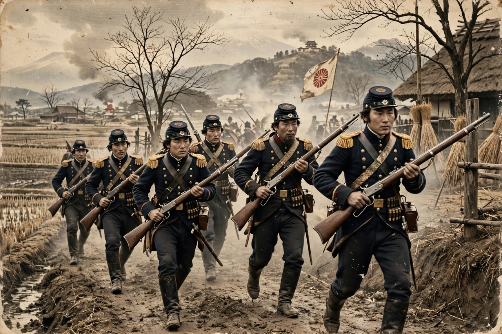

| Boshin War | |
|---|---|
 Imperial forces during the war, 1868 | |
| Date | 27 January 1868 – 27 May 1869 |
| Location | Japan |
| Result | Imperial victory; Tokugawa shogunate abolished; Meiji Restoration |
| Belligerents | Imperial Court (Satsuma, Chōshū and allies) vs. Tokugawa shogunate and northern domains |
| Commanders | Emperor Meiji, Saigō Takamori, Katsu Kaishū vs. Tokugawa Yoshinobu, Enomoto Takeaki |
The Boshin War (戊辰戦争, Boshin Sensō, "War of the Year of the Yang Earth Dragon"), sometimes known as the Japanese Revolution or Japanese Civil War, was a civil war fought in Japan from 1868 to 1869 between forces of the ruling Tokugawa shogunate and factions seeking to return political power to the Imperial Court. The war ended in the total defeat of the shogunate and the restoration of imperial rule under Emperor Meiji.
By the 1860s the shogunate was weakened by peasant unrest, samurai discontent, and the humiliation of the unequal treaties imposed by Western powers after 1853. The southwestern domains of Satsuma and Chōshū, modernizing their forces with Western weapons, formed the Satchō Alliance in 1866. In November 1867 the shōgun Tokugawa Yoshinobu resigned his authority to the emperor, hoping to preserve Tokugawa influence within a new government, but hardliners in Satsuma and Chōshū pushed for the confiscation of Tokugawa lands and status.
Fighting began at the Battle of Toba–Fushimi, south of Kyoto, on 27 January 1868, where the smaller but better-equipped imperial army routed the shogunal forces. Edo Castle was surrendered without a battle in May 1868 after negotiations between Katsu Kaishū and Saigō Takamori, sparing the capital destruction. Resistance continued in the north, where the Ōuetsu Reppan Dōmei of northern domains fought through the autumn, and finally at Hakodate in Hokkaidō, where Enomoto Takeaki's fleet and the short-lived Republic of Ezo held out until June 1869.
Both sides employed foreign military advisers. French officers led by Jules Brunet fought alongside the shogunate's forces and later the Ezo republic, while the British minister Harry Parkes supported the imperial side. Foreign powers formally declared neutrality in 1868, and the arrival of the American-built ironclad Stonewall, sold to the imperial government as the Kōtetsu, helped decide the naval balance at Hakodate.
The imperial victory cleared the way for the sweeping reforms of the Meiji Restoration: the abolition of the domains, a national conscript army, and centralized government. Discontent among former samurai who had supported the restoration but lost their privileges later erupted in the Satsuma Rebellion of 1877.